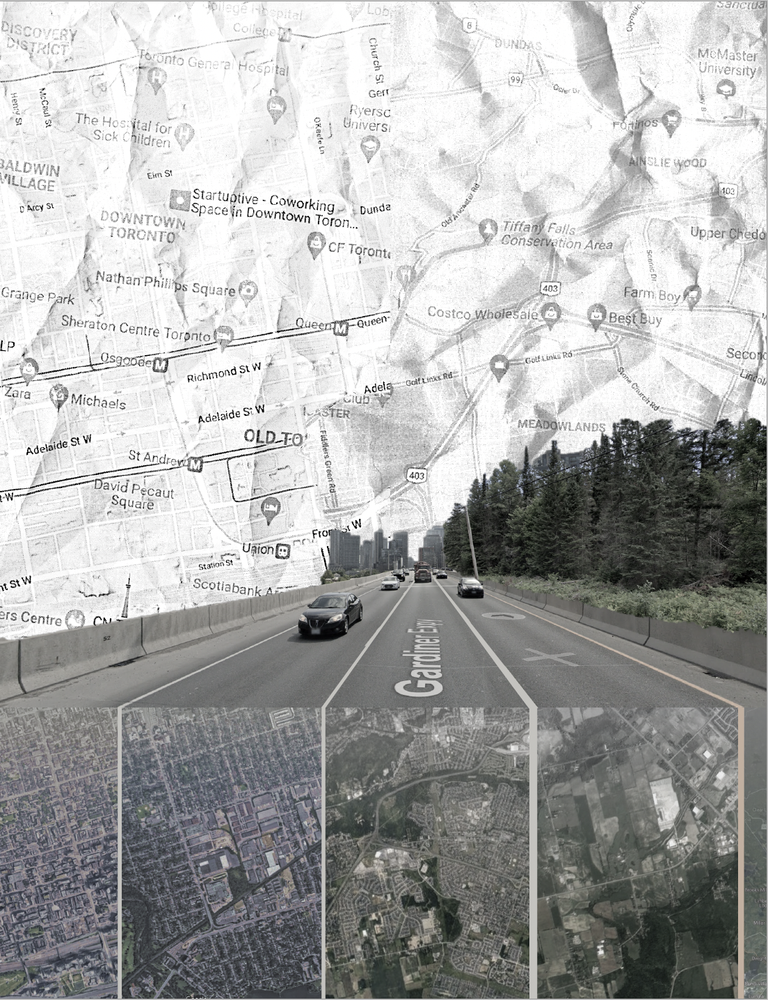

CONFOUNDING TOOLS
ES
HOME
PROJECT 1
PROJECT 2
PROJECT 3
DISCUSSION
POSTS
EXERCISES

Google Maps: Final Iteration
Final Explorations


Developments and iterations
Week 1: Experimentation
Week 2: First Iterations
Week 3: Development and experimentation
Week 4: Final Iterations
❮
❯
The first explorations were where I really tried to have no presumptive or thematic messaging. I really wanted to explore the individual platforms and lean into the messaging the unconsciously provided to me. This allowed me to use the features and controls within the platform in a more effective way. I did however leave the original platforms and create the composite images in Microsoft Word. I found this easier to control the layering and visual hierarchy within the poster.
After the first critique the most ‘solid’ idea was the google maps posters. During this stage of the iterations, I tried to focus on different compositions and the impact of perspective. This idea was formulated from the different viewpoints and view options google maps provides.
Once the second critique was finished, I had decided on a layout to explore more intensely than before. The layout I chose was the one most feedback was directed at. Because of the overwhelming peer response and feedback, it was easy to find flaws and areas of the design to improve upon. The main changes and differences within the posters at this stage is the treatment of colour and addition of texture as well as the alignment of different maps. These things allowed the poster to feel seamless.
As the final iterations began, I still explored another layout option. This was because it allowed me to see the poster from another point of view. Ideas I had or focused on within this poster could be applied and changed to the main poster layout I was focusing on. It also allowed my creative process to be broader instead of limited to one idea. Within the main poster though I really focused on how I was using colour. I introduced it slowly in other areas from pervious iterations. I wanted to maintain the greyscale appearance overall though. So after peer suggestions and some exploration I decided to create a fade from grey to coloured images.
In the final poster the elements I added in each level of critique can be seen. The textured background map allows two different maps to blend while adding physicality to the poster. The trees on the right are in colour while the road is black and white. This allows contrast and directs the viewers eye through the piece. It also shows two separate locations, the city and country to appear as it they are on the same roadway. The next element added was the fade to colour on the bottom satellite images. These images show the road lanes leading to different locations.